V1
Pick a duration and time
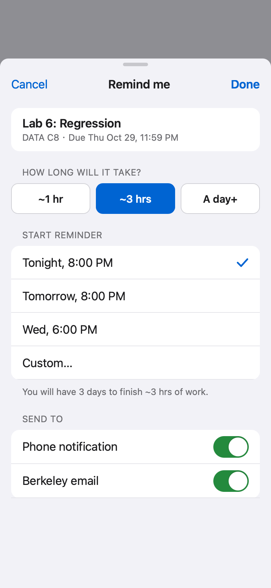
Three duration presets and a selected reminder for tonight. The three-hour value has no AI label or explanation.
01 / Introduction · Canvas mobile feature
Knowing a deadline does not always mean starting on time. We designed a Canvas mobile feature that helps students estimate the work and choose when to start.
38 of 49 students surveyed had missed or nearly missed a deadline in the past six months. See the research ↓
Choose an assignment, review its estimated effort, and set a reminder. The time you choose stays visible in the to-do list.
Follow the original prototype flow
Start in To-do and open Lab 6: Regression to see the assignment details.
Choose Change beside Reminder, review the estimated effort, and save a start reminder.
See the reminder arrive with the assignment, due time, and options to open or snooze.
Then open the reminder email, which includes the same assignment and a summary of the week’s other work.
Lab 6 → Remind me → phone notification → email reminder. This loop follows that sequence in the original recording at 2× speed.
The student’s goal: choose when to start an assignment, then return to it when the reminder arrives.
To-do → Assignment → Remind me → Reminder set → Reminder arrives.
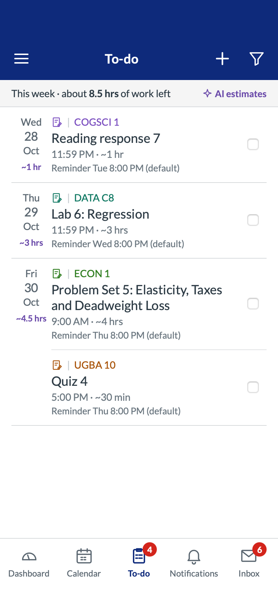
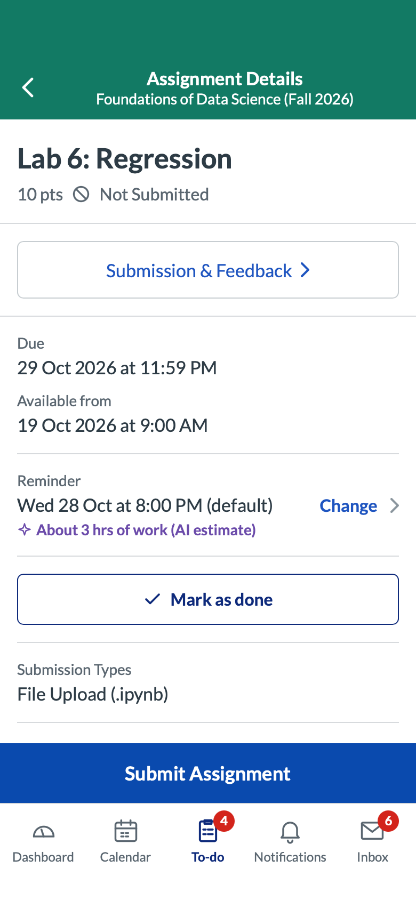
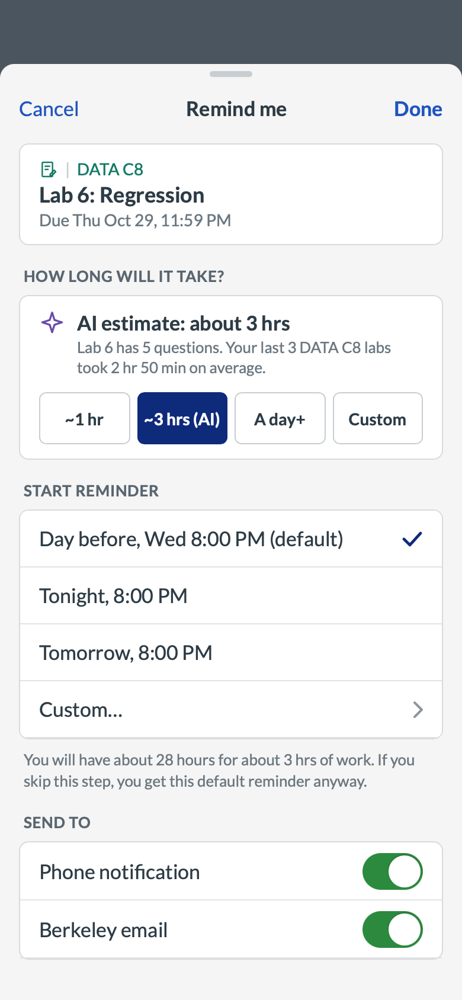
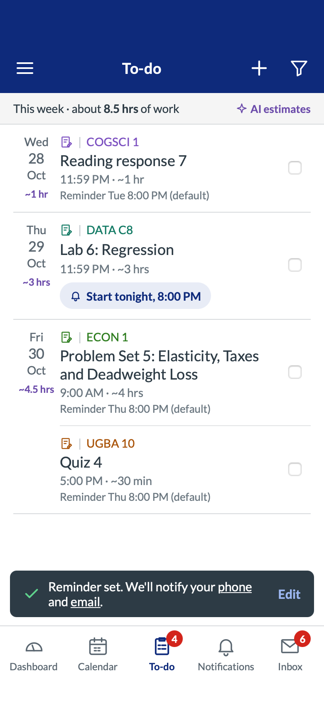
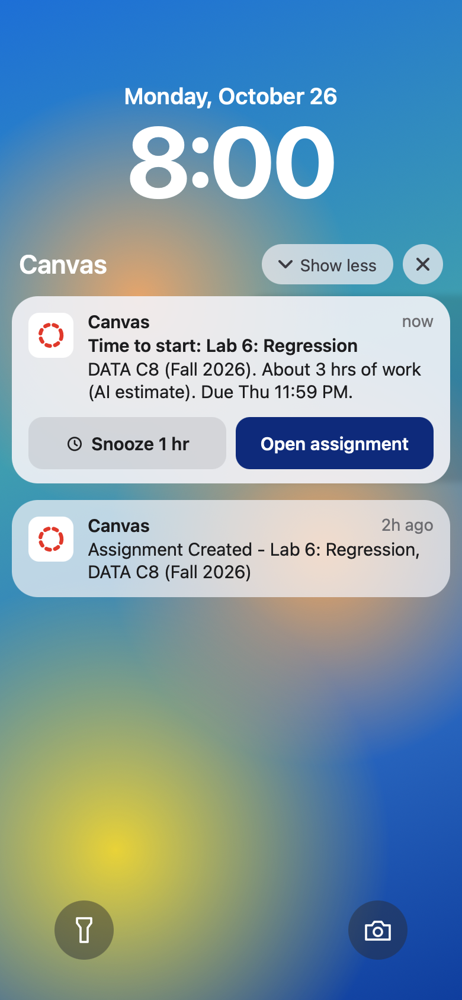
V3 / Five final high-resolution screens. Scroll horizontally in smaller windows; select a screen to enlarge. Notification delivery is illustrated by a mockup.
Completion is separate from submission: marking work done turns its reminder off. It does not submit the assignment.
We surveyed 49 students about their use of bCourses and how they track assignments. Two responses describe the problems this feature addresses: remembering to act and allowing enough time.
Finding 01 / Remembering the deadline is not enough
38 of 49 reported missing or nearly missing a deadline at least once in the past six months.
“Although I knew in the morning about the deadline, I forgot in the evening to do it and forgot to take the quiz.”Anonymous survey response · P45
What this points to: a reminder at the time a student plans to start, with a way to return to the assignment.
Finding 02 / A due date does not show how much work remains
“I underestimated the amount of work I still had left, and did not dedicate enough time to this assignment, which coincided with midterms.”Anonymous survey response · P12
What this points to: show estimated effort beside the reminder time, and let students change that estimate. This is one respondent’s experience, not a measured rate of underestimation.
Our focus: connect the task, the effort, and the time to start. The survey supports exploring this problem; it does not establish that our prototype reduces missed deadlines or that AI estimates are accurate.
Source: bCourses_Canvas Student Survey (Responses).xlsx, worksheet Form Responses 1, rows 2–50. All 49 include consent. Collected October 18–22, 2026. Deadline question: M2:M50; 20 reported once, 12 reported 2–3 times, 6 reported 4 or more, and 11 reported zero. Quotes reproduced verbatim from P45 and P12. No rows removed. Recruitment method and sample representativeness were not documented. Respondent contact details are excluded.
Before building screens, we explored three ways to set a reminder. The sketch marks the full sheet as selected, and the one-tap and inline options as dropped.
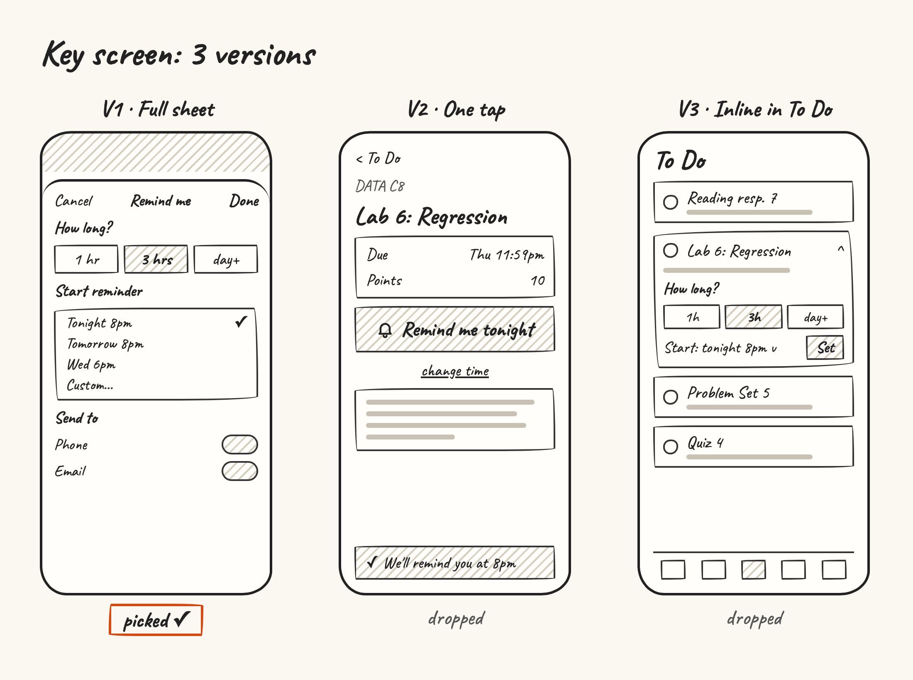
Keeps effort, timing, and delivery choices together. The tradeoff is an extra screen before returning to the list.
Offers a quick “remind me tonight” action on the assignment page, with time changes handled separately.
Puts the controls inside an expanded task row. It avoids leaving the list but adds more content to the row.
The selected and dropped options are marked in the sketch. The tradeoffs describe the layouts; the team’s original rejection reasons still need to be recorded. Labels inside the sketch name alternatives, not the later V1–V3 iterations.
Find the task → open the assignment → set the reminder → see confirmation → receive the reminder.
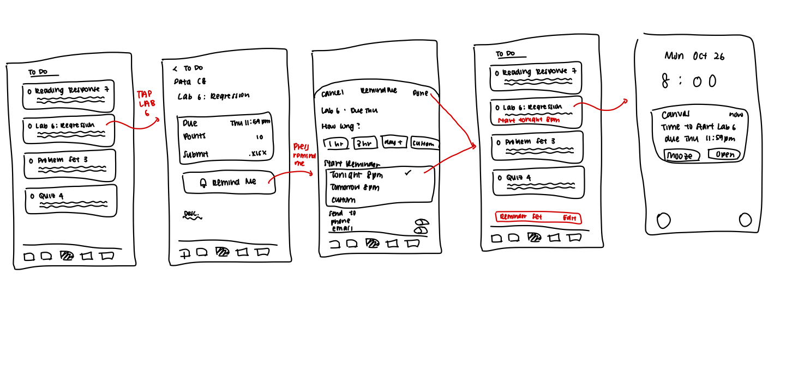
The design evolved in two connected areas: setting a reminder and seeing the week’s work. Each comparison follows the same screen from V1 through V2 to the final V3.
V2 exports are labeled “after feedback.” The changes below are visible in the files. Participant notes, feedback wording, and retest results were not provided, so these are design revisions rather than proven usability improvements.
01 / Reminder settings
Starting point: V1 lets a student choose a duration and time, but does not explain the selected duration. V2 adds that explanation and a default reminder. V3 adds a custom duration.
V1

Three duration presets and a selected reminder for tonight. The three-hour value has no AI label or explanation.
V2
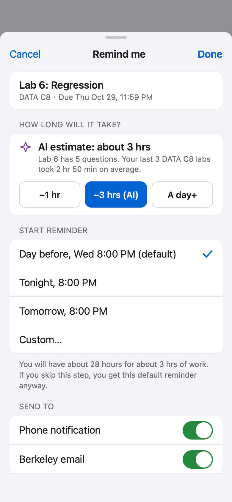
Adds an AI label and sample past-work explanation. Selects the day-before default and explains what happens if setup is skipped.
V3 · Final
Keeps the explanation and default, and adds Custom so students can choose a duration outside the presets.
The result: a suggestion becomes a starting point the student can inspect and change. Still to test: whether the explanation earns appropriate trust, and whether the default reminder is understood.
02 / To-do list
Starting point: four assignments can mean very different amounts of work. V1 shows an item count. V2 adds daily effort totals and reminder times. V3 puts dates and totals beside the task rows.
V1
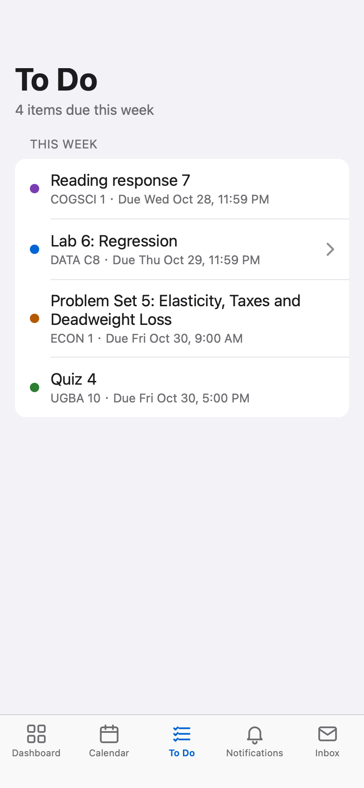
One weekly list shows four items with course names and due dates. It does not show effort or reminder times.
V2
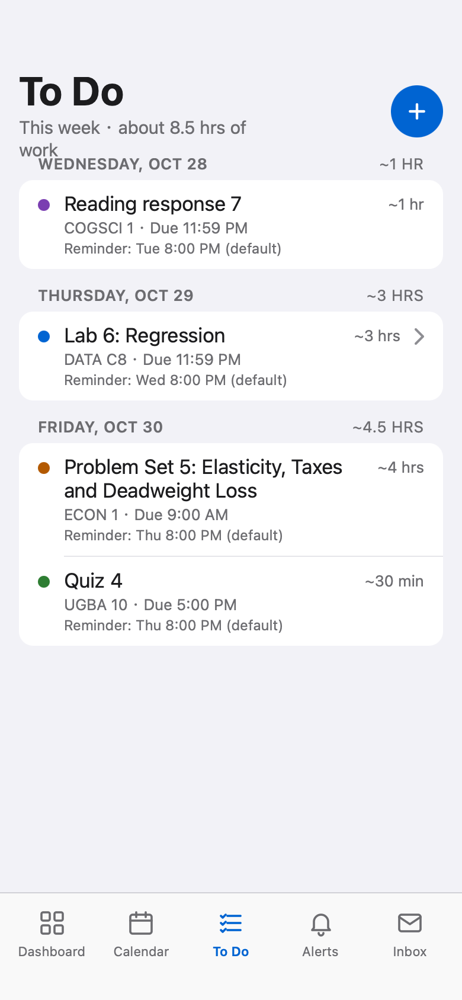
Groups tasks by day, adds daily and weekly effort totals, and shows each default reminder. The weekly summary crowds the first day heading in this export.
V3 · Final
Uses a left date column with daily totals. Course, due time, effort, and reminder appear in each row. A separate blue header holds the menu, add, and filter controls.
The result: the list shows both what is due and how much work it represents. V3 also separates the weekly summary from the first date heading. Still to test: whether the added detail helps students plan without slowing them down.
These are V1-to-V3 observations. No separate V2 assignment or notification screen was provided.
The screens show the changes. They do not show what a tester said or whether task success improved. The next usability check should ask students to set a reminder, change the estimate, and explain the difference between marking work done and submitting it.
The full sheet groups effort, time, and delivery choices. One-tap setup is faster, and inline setup stays in the list; the full sheet has room for all three choices.
V3 keeps the AI explanation but adds Custom. The estimate helps start a plan; it should not decide the plan for the student.
Effort and reminder times stay in the task list. Students can review the plan without reopening every assignment. The tradeoff is more information in each row.
The design now connects a deadline with effort and a start time. What remains is to check whether students understand that plan without coaching.
After testing, use the mistakes observed in those sessions to decide what to simplify. In particular, check the dense task rows and the wording of completion and default reminders.
Prototype: we used Claude to help build the prototype. The team’s sketches and versions document how the design developed.
Case-study website: AI also helped with writing and implementation. The team reviewed the result, rejected the earlier image-heavy layout, and asked for a clearer mobile-focused story.
Return to the final prototype ↑